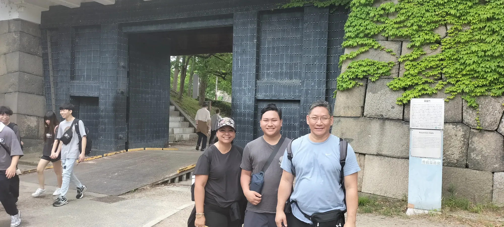
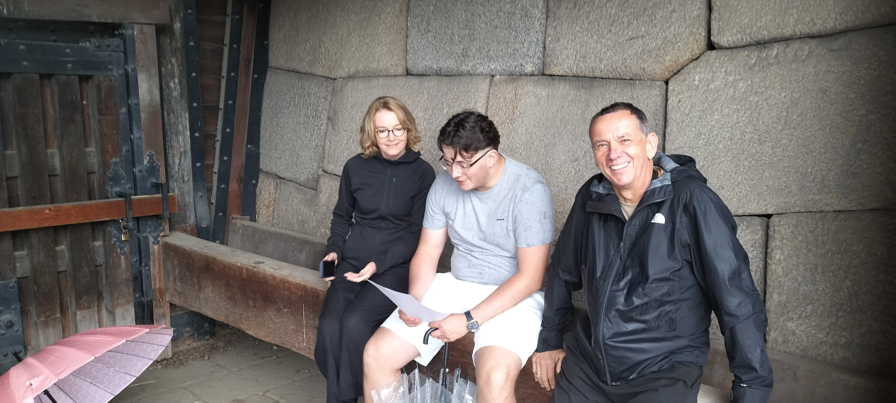
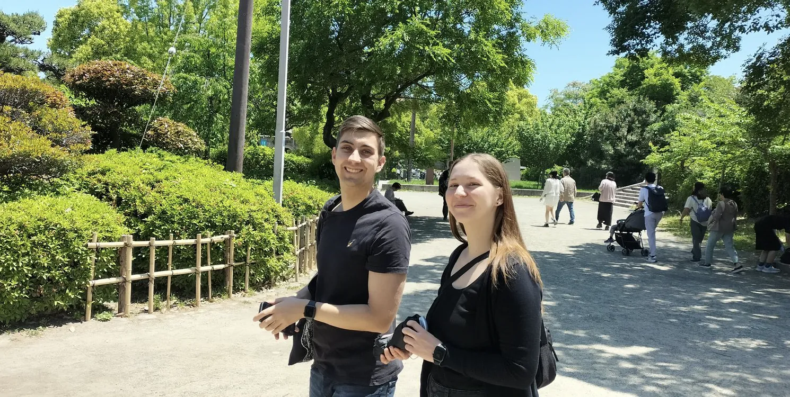

Osaka Castle Walks with Edward - 歴史ポストカードの向こう側
大阪の最大の謎を現代の視点から探究する真実を求める人々のための大阪城公園ツアー。
秀頼は死んだ。母もまた。将軍は自殺だと言った――証拠はそうではない。レジデントヒストリアンと共に現場を調査し、なぜ大阪城が落城しなければならなかったのか、そしてなぜ将軍が勝利後に嘘をついたのかを知りましょう。
各停留所で歴史を発見 ↓
大阪城の最大の謎を、この場所に住む歴史家と共に再検証しましょう。すべての証拠を見せます。何が本当に起きたのかはあなたが決めてください。
この物語の中心には一人の女性がいる——茶々（淀殿）——叔父が破った大名の娘、この城を築いた男の愛人、そしてそれを継いだ少年の母。1615年以前に2度、彼女は権力が愛するすべてを消すのを見た。大阪城の最後の瞬間に彼女が何を選び、なぜ選んだのかは城がなぜ落城し、将軍がなぜ勝利後に嘘をついたのかを理解する鍵である。
1615年6月、大阪城は2度の残酷な攻囲の後に落城した。将軍は、若い秀頼とその母が天守閣内で名誉ある自殺を遂げたと宣言した——雑然とした戦争へのきれいな結末だ。しかし、今日も見える物理的証拠は公式の物語と一致しない。
このウォークは、大阪城を絵葉書ではなく犯罪現場として扱う。
南の堀から始める——かつて日本で最も強力な要塞であった場所の外縁。GPSオーバーレイと歴史的再構成を使い、失われた豊臣の塔、埋もれた石垣、軍隊が前進し停滞した sight lines を見るだろう。
秀頼が豊臣の最後の攻撃を見た場所に立つ——煙が見えるほど近く、結果を知るには遠すぎる。1614年の冬の陣、1615年の夏の陣、そして秀頼に気づかれずに運命を決めた巧妙に文章化された和平協定を検証するだろう。
各停留所で、公式の徳川の語りと物理的証拠を比較する：焼け跡、崩れた壁、私物、そしてリチャード・コックス日記に記録された証言など、将軍の事件の版と矛盾する外国の目撃者の証言。
青屋門で終わる——公式の物語が最大の挑戦に直面する場所。秀頼とその母は城内で死んだのか、それともこの門から脱出したのか。
証拠を聞いた後、あなたが決める。
すべてのゲストはツアー後に完全な歴史リファレンスドキュメントを受け取る。
このツアーは以下に最適：大阪の最大の謎を現代の視点から探究する真実を求める人々、独立旅行者、歴史愛好家、ポッドキャストリスナー、そして公式の物語に疑問を持つすべての人。
「大阪城を翻訳者同伴で歩くのは全く別の体験でした！多くの人は大阪城を訪れ、表面的な美しさに写真を撮り、その背後にある歴史を理解しないまま帰ります。しかし今日は、エドワードの説明がすべてに命を吹き込みました。彼のストーリーテリングを通じて、時を遡り、those ancient daysにいたかのようでした。」
— シャーロン、マレーシア
その場所
各停留所
4つの停留所——倉庫、難波宮、石山本願寺、そして大阪城——途中にストーリーのサブ停留所あり。



解説
近代日本を定義した権力争奪を探求するからです：勝利した徳川幕府が、大阪城を奪い豊臣氏を抹消するための国家認可の物語をどのように作り上げたか。ゲストはプロパガンダの政治、歴史の兵器化、そして城の司令官であった淀殿の真の影響力を検証します。表面的な城の事実ではなく政治的な陰謀に興味がある旅行者にとって、大阪城で最も政治的なツアーです。
净化された教科書版の事件を捨て、大阪の最大の未解決歴史の謎を調査するからです。この体験は、政治的陰謀、中世日本の権力ある女性の真の影響力、そして日本の歴史を再形成するために作られた大規模な公共の嘘が行われた正確な場所に立ちたい「将軍」シリーズのファンに合わせて作られています。
大阪城の歴史を定義する「嘘」は、徳川幕府の国家認可のプロパガンダです。暴力的な絶対権力の奪取を正当化するために、勝利した徳川は歴史を体系的に書き直しました。若い豊臣秀頼を弱く、その母淀殿（いわゆる「側室」）を理不尽でヒステリックな女性として描きました。しかし実際、彼女は城の事実上の最高司令官であり、新政権に対して実存的な地政学的脅威であった。
緊張は大阪冬の陣と夏の陣（1614–1615年）——日本史上最大の武士の戦い——で頂点に達しました。新しく将軍となった徳川家康が、欺瞞、心理戦、大量の砲兵を展開して、号称不落の豊臣の防御を崩壊させ、彼らの血筋を根絶やしにした正確な場所を検証します。
訓練を受けていない目にはほとんど見えず、それは意図的でした。勝利した徳川は歴史書を書き直しただけでなく、元の豊臣城を数メートルの土で物理的に埋め、その上に自らの巨大な石造りの要塞を築きました。現代の公園を活発な考古学遺跡として扱い、地形、現存する土木工事、石造りを読み解いて、足元に隠された豊臣の層を明らかにします。
標準ツアーはコンクリート造りの戦後復興天守閣の内部に焦点を当てます。このウォークはエドワード・イフトウディ エドワードが個人的に率いる知的調査です。観光客で混雑する天守閣内を迂回し、敷地そのものにある生の歴史的層を検証し、残忍な権力移行と歴史の兵器化をたどります。表面的な国民的物語に挑戦し、プロパガンダの下の真実を発見したい旅行者向けのプレミアム体験です。
学校・大学向けの大阪歴史フィールドレッスンでは、先生が設定したテーマや問いをもとに、実際の歴史的景観を使って生徒と歴史を探究します。
学校向けフィールドレッスンを見る →研究：Edward Iftody、大阪在住歴史家・大阪城レジデントヒストリアン
この再構成は、同時代のヨーロッパ人の記録、日本の考古学研究、歴史地理、そして現存する物理的景観に基づいています。